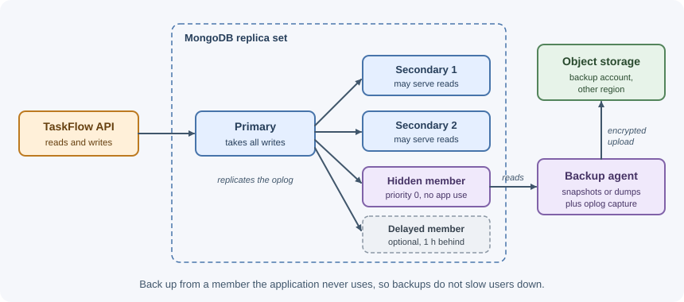

Database Backups and Point-in-Time Recovery¶
Databases are the hardest thing to back up well: they change constantly,
they must be captured in a consistent state, they are often large, and the
backup itself puts load on the system users depend on. This lesson
compares logical and physical backups, shows mongodump/mongorestore
(with the oplog and its caveats) and pg_dump/pg_restore, explains what
makes a backup consistent, how point-in-time recovery works by replaying
the MongoDB oplog or the PostgreSQL write-ahead log on top of a base
backup, what managed services such as MongoDB Atlas and Amazon RDS do for
you, and why backups are usually taken from a replica rather than the
primary.
Why it matters¶
A nightly backup gives you yesterday's database. If a bad migration runs at 14:31, restoring last night's backup throws away fourteen hours of every user's work. Point-in-time recovery (PITR) lets you restore to 14:30:59 instead, losing almost nothing that happened before the mistake. Without it, the choice during an incident is between living with corrupted data and losing a day.
How you back up also decides how long a restore takes. A logical dump of a 500 GB database can take many hours to restore because every document is reinserted and every index rebuilt, which may exceed the recovery time the business can accept. Choosing the method is therefore a decision about RPO and RTO, not just about tools.
Real-world usage¶
- MongoDB. The manual's
backup methods page
compares MongoDB Atlas backups, Ops Manager, filesystem snapshots, and
mongodump, and notes thatmongodumpandmongorestoresuit small deployments, while larger systems use snapshot-based methods. - PostgreSQL. The documentation chapter Continuous Archiving and Point-in-Time Recovery explains combining a file-system-level base backup with archived WAL files to restore to any moment since the base backup.
- Amazon RDS. The guide to restoring to a specified time describes how RDS uses automated backups and archived transaction logs to restore to any second within the retention period, creating a new DB instance.
- GitLab (2017). The postmortem of its database outage lists investigating point-in-time recovery with continuous WAL archiving among its action items, after restoring from a six-hour-old snapshot.
Popular tools and providers: mongodump/mongorestore, MongoDB Atlas
Cloud Backup, Percona Backup for MongoDB, MongoDB Ops Manager,
pg_dump/pg_restore, pg_basebackup, pgBackRest, Barman, WAL-G,
Amazon RDS and Aurora backups, Google Cloud SQL backups, and EBS or
persistent disk snapshots.
How it works¶
Logical and physical backups¶
![Diagram: logical backups such as mongodump and pg_dump read records through the query engine into a BSON or SQL dump file; physical backups such as snapshots and pg_basebackup copy data files or blocks into a volume snapshot. Logical backups are portable across versions and platforms, slow on large data because they read every record, allow restoring one collection or table easily, load the source and churn its cache, support point-in-time recovery with the oplog or WAL, need --oplog for MongoDB consistency, restore slowly because they reinsert data and rebuild indexes, and suit small databases, migrations, and extracts. Physical backups are tied to the same engine and major version, fast with incremental block copies, usually restore the whole database, have little load with copy-on-write snapshots, support point-in-time recovery with the oplog or WAL, need the journal on the same volume or a lock for consistency, restore quickly by copying files and starting, and suit large databases and fast full restores.](../logical-vs-physical-backups.svg)
- A logical backup asks the database for its data and writes it in a
portable format: BSON for
mongodump, SQL or a custom archive forpg_dump. It can be restored into a different version or platform, and you can restore a single collection or table. It is slow for large data, and the restore must reinsert every record and rebuild every index. - A physical backup copies the database's files or disk blocks: a
volume snapshot,
pg_basebackup, or a physical backup tool. It is fast to take (snapshots are often incremental at the block level) and fast to restore (copy files, start the server), but it is tied to the same database engine and major version, and usually restores everything.
Rule of thumb: logical for small databases (up to roughly tens of GB), migrations between versions, and extracting subsets; physical for large production databases where restore time matters. Many teams run both.
Consistency¶
A backup is useful only if it represents a state the database actually had:
- Point-in-time consistent: every record as of one moment.
pg_dumpachieves this automatically by running in a single transaction snapshot, so concurrent writes do not appear half-applied. - Inconsistent: a dump that reads collections one after another while
writes continue. A plain
mongodumpwithout--oplogon a busy replica set can capture a task in one collection but not the related record in another collection written a second later. - Crash-consistent: a snapshot equivalent to pulling the power plug.
Databases with a write-ahead journal recover from this on startup, if
the journal is in the same snapshot. For MongoDB with WiredTiger, a
snapshot of a single volume holding both data and journal is consistent;
if they are on different volumes, or for multi-volume setups, lock
writes (
db.fsyncLock()) or use a tool that coordinates. - Sharded clusters need coordination across shards and the config
servers, which is what Atlas, Ops Manager, and Percona Backup for MongoDB
provide.
mongodumpthroughmongosrequires pausing the balancer, cross-shard transactions, and schema changes, and cannot use--oplog.
MongoDB logical backups: mongodump and mongorestore¶
mongodump reads data through the database and writes BSON plus
metadata (collection options and index definitions). Important options and
caveats from the official documentation:
--oplogalso captures oplog entries written during the dump, so the result is consistent to the moment the dump finished; restore it withmongorestore --oplogReplay. It requires a full dump of a replica set member: it cannot be combined with--db,--collection, or--query, and cannot be used on a sharded cluster throughmongos.- A dump with
--oplogfails if certain operations run during it, including collection renames, aggregations with$out,mapReduce, and changes to users or roles. Schedule dumps away from such jobs. --readPreference=secondaryreads from a secondary instead of the primary.--archivewrites one archive (or a stream to stdout, for piping to object storage) and--gzipcompresses it.--numParallelCollections(default 4) controls parallelism.- Restore into a deployment with the same major version or feature compatibility version as the source.
mongorestorerebuilds indexes after inserting data, which is often the slowest part of a large restore.--nsInclude,--nsFrom, and--nsTorestore selected collections, optionally under new names.
PostgreSQL logical backups: pg_dump and pg_restore¶
pg_dumpdumps one database consistently, without blocking normal reads and writes. Formats: plain SQL (-Fp), custom (-Fc, compressed, selective restore), directory (-Fd, supports parallel dump with--jobs), and tar.pg_restorerestores custom, directory, and tar dumps, in parallel with--jobs, and can restore single tables (-t).pg_dumpdoes not include cluster-wide objects such as roles; dump them withpg_dumpall --globals-only.
Physical backups¶
- Volume snapshots (EBS, persistent disks) are block-level, incremental after the first, and nearly instant to start. Copy them to another region and account to make them real backups.
pg_basebackupcopies a running PostgreSQL cluster's data directory over the replication protocol, including the WAL needed to make it consistent (--wal-method=stream). PostgreSQL 17 added incremental base backups (pg_basebackup --incrementalwith WAL summarization enabled) andpg_combinebackupto merge them.- pgBackRest, Barman, and WAL-G manage full, differential, and incremental physical backups, parallelism, compression, encryption, retention, and WAL archiving.
- Percona Backup for MongoDB offers logical and physical backups and point-in-time recovery for replica sets and sharded clusters.
Point-in-time recovery¶
![Diagram: a timeline from Sunday 02:00 to Tuesday 16:00. A base backup (snapshot) is taken Sunday at 02:00, and the oplog or WAL is archived continuously in segments every few minutes. On Tuesday at 14:31 a bad migration deletes a field from tasks. Recovery restores the base backup and replays the log up to Tuesday 14:30:59; later log entries are not replayed. The result is the database exactly as it was one second before the mistake; good writes after 14:31 must be reapplied from other records or are lost.](../pitr-timeline.svg)
Every change to a database is first recorded in a log: the write-ahead log (WAL) in PostgreSQL, the oplog in a MongoDB replica set. PITR combines two things:
- A base backup (snapshot,
pg_basebackup, or dump) taken at a known point. - An unbroken archive of the log from that point onward.
To recover, restore the base backup, then replay the log until a recovery target: a timestamp, a log position, or a named restore point. The database ends up exactly as it was at that moment.
Practical details:
- The RPO is the unarchived tail of the log. With WAL segments shipped
at least every 5 minutes (
archive_timeout = 300), at most about 5 minutes of committed data is at risk if the server is destroyed. Managed services quote similar figures (RDS can typically restore to within the last five minutes). - The chain must be complete. One missing WAL segment or an oplog gap (for example because the oplog window was shorter than the time between captures) stops replay at that point. Monitor archive failures and the oplog window.
- Pick the target carefully. Find the exact time of the bad operation from application logs, audit logs, or the oplog itself, and stop just before it.
- RTO includes replay. Restoring a base backup and replaying two days of log can take much longer than restoring a fresh snapshot; take base backups often enough to keep replay short.
- Restore next to production, not over it. Recover into a new instance, verify, then either switch traffic or copy the affected records back. This keeps good writes made after the mistake.
Managed database backups¶
MongoDB Atlas provides Cloud Backup (scheduled snapshots with configurable retention, copies to other regions) and Continuous Cloud Backup, which captures the oplog so you can restore to any point within a configured window. Restores go to the same or a different cluster.
Amazon RDS provides:
- Automated backups: a daily snapshot during the backup window plus transaction logs uploaded about every five minutes, giving PITR to any second within a retention period of 1 to 35 days (0 disables them).
- Manual snapshots, kept until you delete them.
- Restores always create a new DB instance with a new endpoint, so the application's connection settings must change (or DNS must point to the new instance).
- Cross-region automated backup replication and integration with AWS Backup for copies to other accounts.
Managed backups remove most of the mechanics, but not the decisions: retention long enough for slow-to-detect corruption, copies outside the account and region, protection against someone deleting the instance and its backups, and restore tests that measure the real RTO.
Backing up a replica, not the primary¶

Backups read a lot of data. On the primary, that competes with
application traffic for disk I/O, CPU, and memory, and a full scan from
mongodump evicts the application's hot data from the WiredTiger cache.
Common practice:
- Take backups from a secondary, or better, a hidden member
(
hidden: true,priority: 0) that applications never read from and that can never become primary. - Remember that a replica can lag. A backup from a member that is 10 minutes behind is 10 minutes older than you think; check replication lag before and during backups.
- A delayed member (
secondaryDelaySecs) that stays, say, an hour behind gives a fast way to recover data from a mistake noticed within the hour. It is a convenience, not a backup: it is in the same cluster, the same account, and eventually applies every mistake. - PostgreSQL can take
pg_basebackupfrom a standby; WAL archiving can also be done from a standby.
Backup windows and impact¶
- Schedule heavy backups at low traffic, and measure their duration as data grows: a nightly dump that took 40 minutes a year ago may now run into business hours.
- Throttle where tools allow (parallelism, bandwidth limits) and watch latency during backups.
- Prefer snapshots for large data: copy-on-write snapshots start instantly and run in the storage layer, although the first snapshot of a volume copies every block.
- Separate concerns: a short RPO comes from continuous log capture, not from running full backups more often.
When to use and when not to use¶
| Database situation | Recommended approach |
|---|---|
| TaskFlow on Atlas or another managed service | Managed snapshots plus continuous backup (PITR), copies to another region, restore tests |
| Self-managed MongoDB replica set, under tens of GB | mongodump --oplog from a hidden member plus oplog capture, or Percona Backup for MongoDB |
| Self-managed MongoDB, large or sharded | Coordinated snapshot-based backups with PITR (Percona Backup for MongoDB, Ops Manager) |
| PostgreSQL, small | pg_dump nightly plus WAL archiving for PITR |
| PostgreSQL, large | pgBackRest, Barman, or WAL-G with physical base backups and WAL archiving |
| Migrating to a new major version or platform | Logical dump and restore (or logical replication) |
| Recovering one deleted collection or table | Restore a backup to a scratch instance, then copy the records back |
Do not use logical dumps as the only backup for a large database whose restore time would exceed the RTO, and do not rely on replicas or delayed members instead of backups.
Practical examples¶
MongoDB: a hidden backup member¶
// mongosh, connected to the primary: add a member used only for backups
rs.add({
host: "mongo-backup-1.internal.example.com:27017",
priority: 0, // can never become primary
hidden: true, // invisible to application drivers
});
// Optional: a delayed member that stays one hour behind the primary
rs.add({
host: "mongo-delayed-1.internal.example.com:27017",
priority: 0,
hidden: true,
secondaryDelaySecs: 3600,
});
rs.printSecondaryReplicationInfo(); // check how far behind each member is
MongoDB: dump with the oplog and restore selectively¶
#!/usr/bin/env bash
# scripts/mongo-backup.sh: consistent nightly dump from the hidden member
set -euo pipefail
STAMP="$(date -u +%Y-%m-%dT%H%M%SZ)"
mongodump \
--uri="mongodb://backup-user@mongo-backup-1.internal.example.com:27017/?authSource=admin&directConnection=true" \
--oplog --archive="/var/backups/taskflow-${STAMP}.archive.gz" --gzip
aws s3 cp "/var/backups/taskflow-${STAMP}.archive.gz" \
"s3://taskflow-backups-example/mongodb/taskflow-${STAMP}.archive.gz"
# Reached only if both commands succeeded: do not let local dumps fill the disk
rm -f "/var/backups/taskflow-${STAMP}.archive.gz"
# Full restore into a scratch deployment, replaying the oplog captured during the dump
mongorestore --uri="$SCRATCH_URI" --archive=taskflow-2026-11-12T020000Z.archive.gz \
--gzip --oplogReplay --drop
# Selective restore: only the tasks collection, under a new name, for comparison and repair
mongorestore --uri="$SCRATCH_URI" --archive=taskflow-2026-11-12T020000Z.archive.gz --gzip \
--nsInclude="taskflow.tasks" --nsFrom="taskflow.tasks" --nsTo="recovery.tasks_20261112"
Run the script from a systemd timer with failure alerts rather than a
bare crontab line; the timer, overlap protection, and OnFailure=
notification are shown in
scheduled jobs and log rotation.
The backup user only needs the built-in backup role, and the restore
user the restore role. The connection string's password comes from the
environment or a secrets manager (here the URI omits it). Restoring
selectively into a new namespace lets you copy back only the deleted
documents with an aggregation or a script, instead of overwriting the
whole collection.
MongoDB: point-in-time recovery with Percona Backup for MongoDB¶
# Enable continuous oplog capture (PITR) alongside scheduled backups
pbm config --set pitr.enabled=true
pbm backup --type=physical # or logical (the default)
pbm list # shows backups and the PITR time ranges available
# Restore the cluster to just before the bad migration
pbm restore --time="2026-11-10T14:30:59"
On Atlas the same operation is a point-in-time restore from the Backup page, CLI, or Admin API, targeting a timestamp within the continuous backup window.
PostgreSQL: logical backups¶
# Parallel, compressed directory-format dump of one database
pg_dump --format=directory --jobs=4 --file=/var/backups/taskflow-2026-11-12 "$DATABASE_URL"
# Roles and other cluster-wide objects are not in pg_dump; dump them separately
pg_dumpall --globals-only --file=/var/backups/globals-2026-11-12.sql
# Parallel restore into a scratch database
pg_restore --jobs=4 --clean --if-exists --no-owner \
--dbname="$SCRATCH_DATABASE_URL" /var/backups/taskflow-2026-11-12
PostgreSQL: continuous archiving and PITR¶
# postgresql.conf on the primary: archive every completed WAL segment
wal_level = replica
archive_mode = on
archive_command = 'test ! -f /mnt/wal-archive/%f && cp %p /mnt/wal-archive/%f'
archive_timeout = 300 # force a segment switch at least every 5 minutes (bounds the RPO)
# Base backup, streaming the WAL needed to make it consistent
pg_basebackup --pgdata=/var/backups/base-2026-11-09 --format=plain \
--wal-method=stream --checkpoint=fast --progress
# postgresql.conf on the restore server (data directory copied from the base backup)
restore_command = 'cp /mnt/wal-archive/%f %p'
recovery_target_time = '2026-11-10 14:30:59+00'
recovery_target_action = 'promote'
# Ask PostgreSQL to enter targeted recovery on startup, then start it
touch "$PGDATA/recovery.signal"
pg_ctl -D "$PGDATA" start
# The log shows WAL being replayed and "recovery stopping before commit of transaction ..."
The archive_command shown is the documentation's simple example; in
production use a tool such as pgBackRest or WAL-G that copies WAL to
object storage, verifies it, and handles retention.
Amazon RDS: restore to a point in time¶
# How far forward can we restore?
aws rds describe-db-instances --db-instance-identifier taskflow-prod \
--query 'DBInstances[0].LatestRestorableTime'
# Restore into a NEW instance, one second before the bad migration
aws rds restore-db-instance-to-point-in-time \
--source-db-instance-identifier taskflow-prod \
--target-db-instance-identifier taskflow-restore-20261110 \
--restore-time 2026-11-10T14:30:59Z \
--db-subnet-group-name taskflow-private \
--no-publicly-accessible
aws rds wait db-instance-available --db-instance-identifier taskflow-restore-20261110
Verify the restored instance, then either repoint the application to it or copy the affected rows back to production.
Best practices¶
- Combine base backups with continuous log capture (oplog or WAL) for point-in-time recovery.
- Choose logical or physical backups by data size and RTO; test how long a full restore really takes.
- Make backups consistent:
--oplogformongodump, single-volume or coordinated snapshots, tools that coordinate sharded clusters. - Take backups from a hidden secondary or standby, and watch replication lag.
- Monitor log archiving failures and the oplog window, since a gap breaks PITR.
- Restore into a new instance and copy data back, rather than restoring over production.
- Back up roles, users, and configuration alongside data.
- Keep managed-service backups, but add cross-region or cross-account copies and retention that matches your detection time.
- Record the backup window duration and its impact on latency, and revisit as data grows.
In production¶
- PITR stops hours short of the target time.
Detect: PostgreSQL stops with "recovery ended before configured
recovery target was reached", or the oplog capture shows a missing
range. Cause: WAL archiving failed
for a while (full disk, expired credentials) or the oplog rolled over
before it was captured. Fix: alert on archive failures
(
pg_stat_archiver.failed_count), size the oplog for a long enough window, and take a fresh base backup after any gap. - The nightly dump makes the API slow every night.
Detect: p99 latency and cache eviction rise during the backup window.
Cause:
mongodumpreads from the primary and evicts the working set from the cache. Fix: dump from a hidden member, throttle parallelism, or switch to snapshots. - A restored dump has orphaned or inconsistent references.
Detect: tasks reference projects that do not exist in the restored
data. Cause:
mongodumpwithout--oplogran while writes continued, so collections were captured at different times. Fix: use--oplogwith--oplogReplay, or snapshot-based backups. mongodump --oplogfails intermittently. Detect: the backup job exits with an error about an operation not allowed during the dump. Cause: a$outaggregation, collection rename, or user change ran during the dump. Fix: schedule those jobs outside the backup window, or move to a backup tool that handles them.- A restore exceeds the RTO by hours.
Detect: a drill shows
mongorestoreorpg_restorestill rebuilding indexes long after data loaded. Cause: a logical backup of a database that has outgrown it. Fix: physical backups for full restores, keep logical dumps for selective recovery, and measure restore time regularly. - Restored RDS instance works, but the app still writes to the old one. Detect: writes keep arriving at the damaged instance after the "restore". Cause: PITR creates a new instance with a new endpoint. Fix: include connection switching (DNS name or configuration change) in the runbook, and practise it.
Important terminology¶
- Logical backup: A dump of records through the database (BSON, SQL).
- Physical backup: A copy of data files or blocks.
- Base backup: The starting point for point-in-time recovery.
- Write-ahead log (WAL): PostgreSQL's log of every change, written before data files.
- Oplog: MongoDB's capped collection recording every write on a replica set.
- Oplog window: How far back the oplog reaches before old entries are overwritten.
- Point-in-time recovery (PITR): Restoring a base backup and replaying the log to a chosen moment.
- Recovery target: The time, log position, or restore point where replay stops.
- Crash-consistent: Equivalent to a power loss; recoverable with a journal.
- Hidden member / delayed member: Replica set members not visible to applications, optionally lagging on purpose.
- Archive timeout: The maximum time before PostgreSQL ships a partly filled WAL segment.
Common mistakes and misconceptions¶
- Running
mongodumpwithout--oplogon a busy replica set and calling the result consistent. - Assuming nightly backups give a small RPO.
- Never checking that WAL or oplog capture is continuous.
- Taking backups from the primary during peak hours.
- Treating a delayed member as a backup.
- Restoring over production instead of into a new instance.
- Forgetting roles, users, and configuration when restoring.
- Assuming a managed service's default retention (often a week) covers corruption discovered a month later.
- Never measuring how long a full restore takes.
Revision questions¶
- Compare logical and physical backups on portability, speed, selective restore, and impact.
- What does
mongodump --oplogdo, what are its restrictions, and how is the dump restored? - Why is
pg_dumpconsistent even while the database is being written to? - Explain point-in-time recovery step by step. What breaks it?
- With
archive_timeout = 300and WAL shipped to another region, what is the worst-case RPO if the primary's region is lost? (About 5 minutes of committed transactions, plus any archiving backlog.) - A base backup of 400 GB restores at 250 MB/s, and 60 GB of WAL replays at 100 MB/s. Roughly how long is the restore, and how could you shorten it? (1,600 s plus 600 s, about 37 minutes; take base backups more often or use faster storage.)
- Why back up from a hidden member, and what should you check about it first?
- What changes in your runbook when RDS PITR creates a new instance?
Further learning¶
- MongoDB: mongodump
- MongoDB: mongorestore
- MongoDB Atlas: Cloud Backups
- Percona Backup for MongoDB
- PostgreSQL: pg_dump
- PostgreSQL: pg_combinebackup
- Amazon RDS: Automated backups
- MongoDB backup and restore and replication in the Databases section
- Next: disaster recovery, RPO, and RTO. Back to the backups overview.